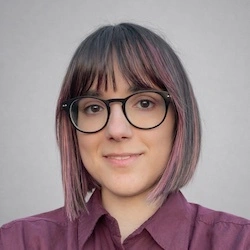

Hola, soy Ángela 🖐
Trabajo como profesional de la traducción y la comunicación en español, inglés, francés y gallego. Me crié en Galicia, España, y mi amor por los idiomas hizo que acabase estudiando en la Facultad de Traducción e Interpretación de la Universidad de Ginebra, mientras vivía en Francia al otro lado de la frontera. Con mi trayectoria en comunicación, marketing y redes sociales, y más de ocho años de experiencia en el ámbito de las organizaciones sin ánimo de lucro, creo fervientemente en el poder del lenguaje como motor de cambio. Los proyectos creativos son música para mis oídos, por eso disfruto de la transcreación y la traducción literaria. También soy cantante y música, y me gusta manterme activa con una lista variada de aficiones, entre las que se encuentran la lectura, las elaboraciones con masa madre, la repostería, el punto y la jardinería.